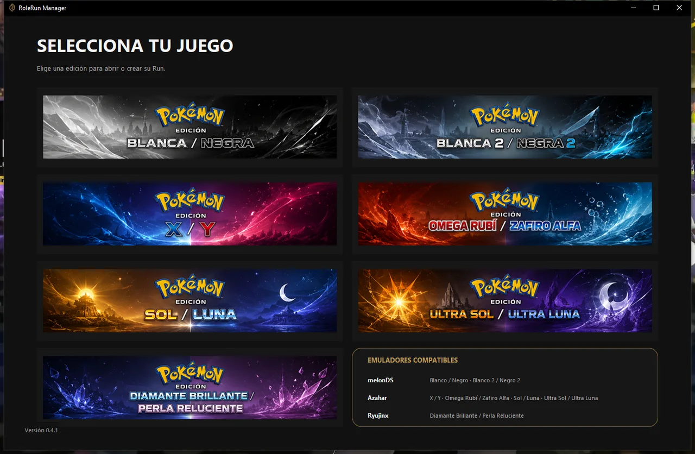

Demasiadas paradas
Volver al Centro Pokémon una y otra vez para curar. Mucho ir y venir, poco avanzar.
Un formato de reto Pokémon
El Nuzlocke con roles: menos paradas, menos azar, más tensión.
Gratis · Windows 10 y 11 · No hace falta instalar nada más
La idea
Volver al Centro Pokémon una y otra vez para curar. Mucho ir y venir, poco avanzar.
A veces te toca un Pokémon con ataques tan fuertes que se vuelve imparable, y el reto deja de dar miedo.
La solución
De tus seis Pokémon, solo uno —el Líbero— puede aprender cualquier movimiento del juego. Los otros cinco solo pueden usar los movimientos de su rol, pensados para no romper el reto.
Si te sale algo desequilibrado, es solo uno. El resto del equipo tiene ataques coherentes con lo que hace.
Una captura por ruta. Como en cualquier Nuzlocke.
Debilitado es para siempre. Se va al Cementerio y no vuelve en toda la Run.
Sin rol, no combate. Un Pokémon puede estar en el equipo mientras lo preparas, pero no lucha hasta tener rol.
Cómo se juega
Los seis roles
Toca un rol para ver qué puede aprender y qué no.
Para todos los roles de combate: Asesino, Mago, Tanque y Prisma pueden usar cualquier movimiento de estado que solo afecte a la Velocidad (subir la suya o bajar la del rival), como Agilidad o Espacio Raro. Asesino y Mago, además, pueden usar Sustituto.
Lo que hace de paso un ataque no cambia su tipo: que Giro Rápido suba la Velocidad no lo convierte en un movimiento de estado. Sigue siendo daño físico, y un Mago no puede aprenderlo.
Nadie, ni siquiera el Líbero, puede usar Doble Equipo ni Reducción.
Vidas, curaciones y drafteos
Lo que mueve las vidas no es cualquier combate, sino un combate de seis Pokémon: un líder de gimnasio, el Alto Mando o un rival importante.
10 vidas
Prueba: ¿cómo te ha ido en tu próximo combate de seis?
Superas un combate de seis Pokémon sin perder a nadie: sumas una vida.
Pierdes Pokémon en ese combate: restas una vida por cada uno perdido en él. Hasta −6 si cae el equipo entero.
Cada combate de seis Pokémon que superes te da un drafteo, pierdas vidas en él o no.
Cada vez que entras en combate contra un líder de gimnasio, ganas una curación. Adiós a las idas y venidas al Centro Pokémon.
Ganas la Run al derrotar al Campeón de la Liga.
Pierdes la Run si te quedas a 0 vidas antes.
Drafteos
Es la recompensa de los combates importantes: enseñar a un Pokémon un movimiento al azar, pero compatible con su rol.
Modo opcional para dos
El equivalente a un DualLocke: dos jugadores, cada uno con su propia Run, que se enfrentan entre sí en tres momentos.
| Resultado | Ganador | Perdedor |
|---|---|---|
| 2 – 0 | 2 puntos | 0 puntos |
| 2 – 1 | 2 puntos | 1 punto |
Al superarla, cada jugador suma tantos puntos como Pokémon le queden vivos. Si la superan los dos, cada uno suma los suyos.
Si caes entero en la Liga, esa Liga te da 0 puntos. Si aún te quedan vidas, puedes reintentarla; si te deja a 0 vidas, pierdes el DualRole.
RoleRun Manager no lleva la cuenta de los puntos del DualRole: es una forma de jugar, no una función del programa.
RoleRun Manager
Se abre junto a tu emulador, lee la partida en directo y se encarga de las cuentas.

Descarga
Última versión
Descargar para WindowsWindows 10 u 11 de 64 bits · Gratis
Abre RoleRunManager-Setup.exe.
Si Windows dice que «protegió su PC», pulsa «Más información» y luego «Ejecutar de todas formas».
Sigue los pasos. Ya está: Python y .NET van dentro, no tienes que instalar nada más.
Windows avisa de cualquier programa que no tenga una firma digital de pago (cuesta cientos de euros al año). Es normal en proyectos gratuitos: el aviso solo sale la primera vez.
Las actualizaciones te las avisa el propio programa. · Todas las versiones
Preguntas frecuentes
No. El instalador lo lleva todo dentro. Solo necesitas tu emulador con el juego.
No. Tus Runs, copias de seguridad y ajustes se guardan aparte, en Documentos\RoleRun Manager. Actualizar o desinstalar el programa no las toca.
El programa lo comprueba al abrirse y te avisa con las novedades y un botón para descargarla. El instalador nuevo se instala encima del anterior.
Puedes instalar esta versión sin miedo: tus Runs siguen en Documentos. Cuando compruebes que todo va bien, ya puedes borrar aquella carpeta.
Como cualquier programa: Configuración de Windows → Aplicaciones → RoleRun Manager → Desinstalar. Tus Runs no se borran.
Usa el botón REPORTAR FALLO del menú flotante del programa: cuenta qué pasó, añade capturas y llega directamente al creador.